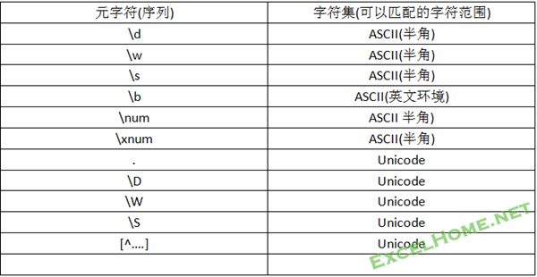
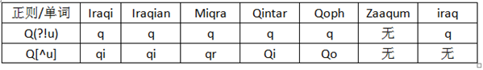

第二篇元字符(序列)进阶篇 34 一、元字符与字符集 34 二、^$的位置到底在哪里 35 三、字符组中元字符转义规则 36 四、字符组与多选结构”|” 36 五、否定顺序环视与否定字符组 37 六、环视的多角度理解与应用 38 （一）用作锁定特定位置的文本字符串 38 （二）用作对特定字符串是否存在的判断 39
为了能在计算机中存储,处理和显示字符,在计算机初期出现了ASCII编码系统,它是用一系列代码表示字符,例如:十进制数65代表字符A等.ASCII代码表中共有256个字符(包括扩展代码表), 它主要用于显示现代英语和其他西欧语言.随着计算机的发展,为了处理显示其它国家或地区的文字,又出现了很多地区性编码系统,如汉字编码GB 2312-80等.地区性代码在电脑中的处理容易出现兼容性问题,于是相关国际组织制定了一个称之为Unicode的字符编码系统. Unicode 是为了解决传统的字符编码方案的局限而产生的，它为每种语言中的每个字符设定了统一并且唯一的二进制编码，以满足跨语言、跨平台进行文本转换、处理的要求;Unicode定义了大到足以代表人类所有可读字符的字符集.
字符编码是一个很大的课题,它不是正则研究的范畴.这里提到它,目的是提醒你在使用正则元字符(序列)表示字符时,需要注意它们的使用范围,正则表达式是在英文语系下诞生的,所以很多元字符(序列)可能只适合于ASCII代码表字符集.很多正则教程的默认语境也是英语环境下的表述.为此总结如下:

说明:表中结论适合VBscript或JavaScript正则.在一些高版本的Java, .Net等语言中,正则有很大发展.不仅增加了更多的元字符种类,而且扩展了原有元字符的特性,如”\d”还可以匹配非英文数字.如可以匹配全角的数字;而”\b”也可以处理Unicode字符集等等.
当正则对象的Multiline属性为False时(默认值),脱字符^与美元符$的意义是明确的,即分别表示文本开始和结束位置.
而当Multiline属性为True时,情况变得不那么简单了.特别是在匹配多行文本时,如果不仔细搞清楚它们的意义,就会遇到麻烦.
先来看”行”的定义, 不同操作系统对文本文件“行结束符”有不同定义.看到一种说法:Windows下按Enter键是 \n\r,Unix下是\n,Mac下是\r,在MS的系统中纯文本格式按一个回车键是输入了两个字符，一个回车一个换行。在LINUX系统中则只是一个回车.
但现实是:在用VBA正则处理文本行的实践中,我们发现,无论是从文本文件中读出的字符串,或word文档读出的字符串,或其它方式提供的字符串,一个文本行,往往结尾有\r\n或\n或\r的情况.
本人通过实践发现,VBA中正则对行的理解是根据\n或\r来确定.总结如下:
“^”:
只要行尾出现\r或\n或\r\n,那么就会在文本行开始处创建一个”^”.所以无论行结束符是\r\n,或是\n,或是\r,那么行开始处一定有一个”^”位置符.
“$”:
只要行尾出现\r或\n,那么就会在\r或\n字符前面紧挨着创建一个”$”位置.所以,如果行结尾符是\r\n两个字符组成的,那么,就会创建两个”$”位置.
另外,无论文本结束处有无\r或\n,^与$是始终存在的.它代表文本的开始和结束位置.
所以,在处理多行文本时,应用锚点^和$,尤其是应用$时,应该注意文本行结束处到是什么字符.
在Multiline为True的前提下,如果要匹配连续多行文本,下列正则表达式就可能出问题:
(^.*$){1,5}
1. 假如文本行的结束符是”\r”,那么,该表达式就会匹配整个文本.因为”.”可以匹配回车符,”*”是匹配优先的.
2. 假如文本行的结束符是”\r\n”,那么,该表达式只能匹配到一行内容,尽管文本有多行.这是因为上面说到的原因,在这种情况下,一行中有两个结束符.
在匹配多行文本时,最好使用下面的方式:
(^.*?(?:\r?\n|\r)){1,5} 或
(^[^\r\n]+(?:\r?\n|\r)){1,5}
当然,也可以事先测试一下文本的结束符是什么,后面不用选择结构.
前面已经知道,在正则表达式中,表示元字符的字面意义时,往往需要用反斜线”\”转义.那么,在普通字符组中,表示元字符的字面意义时,如何处理呢?
普通字符组中表示元字符的字面意义有自己的规则,总结如下:
1. 在字符组中需要转义的元字符:
\ ] [ ^ -
例:[\\|\]],可匹配字符”\”或”]”或”|”.
在上面五个需要转义的字符中,除反斜杠外其它四个字符在某些位置上也可不必转义,例如: [][^-] ,可分别匹配它们四者之一.虽然如此,建议使用以上五个字符时都进行转义,让代码更清晰.
2. 字母或数字字符如果在字符组中使用反斜线转义,要么出现错误,要么创建一个正则表达式记号.如把”\b”放入字符组中[\b],它表示匹配一个退格符(\x8)
3. 表示字符的元字符序列如\n,\w等,在元字符中是不能转义的.它们意义与在字符组外是一致的.例:[\n\x20]可匹配一个换行符或空格.
4. 表示位置,数量或控制的元字符(序列),放入字符组中,不再有原来意义.例,让”^”紧跟在字符组的”[“后,表示否定字符组,放在字符组的其它位置,它表示匹配一个字面上脱字符;”$”放入字符组中也是表示字面字符”$”.
例:正则表达式:
[*+^$|(){}?]
可以匹配下列字符之一:* ,+ ,^ ,$ ,| ,( ,) ,{ ,} ,?
5. 英文双引号无论在字符组内外,都要用重复的双引号转义.如[“”]匹配一个双引号(”).
在某些情况下,普通字符组与”|”匹配效果是一样的,如
[abc]与a|b|c
都是表示匹配字符a或b 或 c
而更多的情况是差异极大:如:
[中国|成都]
(中国|成都)
前者表示匹配字符”中/国/|/成/都”五个字符之一 ;后者表示匹配连续字符串”中国”或”成都.”
它们两者的区别:
1. 多选结构允许子表式表示一个更复杂的字符串,而普通字组只能表示一个字符.
2. 即使多选结构的子表达式是单个字符的情况,两者的匹配机理也是不一样的.大多数正则引擎会对字符组提供非常好的优化,使用垂直竖线的多选结构要求引擎使用在计算上代价很高的回溯算法,而字符组则只使用非常简单的搜索算法.
结论:如果匹配是多个字符之一最好选择字符组方式,而如果要匹配多个字符串之一就只能用多选结构方式了.
看一个例子:
(?!u)
[^u]
前者是否定顺序环视,表示该位置之后不能匹配字符”u”;后者是否定字符组,表示匹配一个非”u”字符.现在我们用下列两个正则表达式分别作用于目标文本的每个单词,观察匹配结果:
目标文本:
Iraqi
Iraqian
Miqra
Qasida
Qintar
Qoph
Zaaqqum
Iraq
正则表达式:
Q(?!u)
Q[^u]
选项:设置IgnoreCase为true
下面是结果列表:

可出看出两者的特点:
q(?!u)表示只要字符q后面不跟着字符u,匹配则成功.它有两种情况,一是后面跟着一个不是u的字符,二是q后面不存在任何字符(如iraq).
另外从匹配结果再次看出,环视是不”消耗”字符的,即环视中子表达式匹配的结果(u),并不会出现在最终的匹配结果中.
q[^u]表示字符q后面必须跟着一个不是u的字符,才会匹配成功.可见[^u]虽然是否定字符组,但它要匹配一个字符是”肯定”的.也就是说否定字符组表示的是匹配一个未列出的字符,而不仅仅是”不要匹配列出的字符”
环视按引擎往前(右)看还是往后(左)看,分为顺序环视和逆序环视.VBscript正则只支持往前看的顺序环视.环视有多种叫法,如”零长度断言”等.
对肯定顺序环视(?=exp)来说:从位置的角度理解,表示该位置是子表式exp左面紧挨的位置;从”断言”的角度理解,它断言自身出现的右边能匹配文本exp.
否定环视则是相反的情况.
从匹配过程来理解,顺序环视是从左至右查看文本,尝试匹配exp,如果能够匹配,那么肯定顺序环视(?=exp)报告成功,而否定顺序环视(?!exp)报告失败.反之,如果不能够匹配,那么肯定顺序环视报告失败,而否定顺序环视报告成功.
从环视的应用来说,主要有两个方面:
例1:将文本中的”windows98,windows97,windowsxp”中的字符串”windows”替换为”win”
正则:
Windows(?=98|97|xp)
这个正则表达式锁定了字串”windows”: 在目标文本中,只有字符串”98”或”97”或”xp”前面的”wordows”才会得到匹配.它排除了在其它位置上存在的”windows”字符串.
例2:查找后面不跟着某个特定单词(如Cat)的任意单词
正则:
\b\w+\b(?!\W+cat\b)
这个正则表达式首先用”\b\w+\b”去匹配一个单词,如匹配成功,紧接着尝试表达式(?!\W+cat\b),它的意思是查找该位置之后有无这样的字符串:若干个非单词字符(如空格)后跟着单词”cat”.
如果没有,则环视部分报告匹配成功,于是整个正则表达式匹配尝试结束,最终成功匹配,匹配结果为第一部分找到的单词.
反之,如果有,则环视部分报告匹配失败,于是整个正则表达式匹配失败,最终结果是,第一部分找到的单词不是符合要求的.
要注意的是在环视的子表达式中,Cat后用了单词边界\b,是避免把某一个单词内部的cat字符当成单词了.
例3:查找不重复的单词
正则:
\b(\w+)\b(?!.*?\b\1\b)
前面我们介绍过查找相邻重复单词的正则表达式:
\b(\w+)\s+\1\b
你能否写一个查找相邻或不相邻的重复单词的正则表达式呢?
例1:搜索同时包含多个单词的文本行,如:搜索包含单词one和two的文本行
正则:
^(?=.*?\bone\b)(?=.*?\bwo\b).+$
例2:查找除某个单词(cat)之外的任意单词
\b(?!cat\b)\w+
例3:查找不包含另一个单词(cat)的单词
\b((?!cat)\w)+\b
例4:匹配不包含某个单词(cat)的整行
^((?!\bcat\b).)*$
请自己仔细解读这几个可在实际工作应用的经典正则表达式.
小结:与锁定文本功能不同,用作判断时,环视结构是放在前面的,匹配尝试时,它将在指定位置判断是否存在特定的字符串(即尝试匹配环视结构内的子表达式),如果环视报告成功则继续下一字符的匹配尝试;如果环视报告失败,则宣布整个匹配过程失败.
例1中指定位置是从行开始位置尝试子表达式的匹配;
例2中是从每个单词边界尝试子表达式的匹配;
例3和例4是在单词内部或行内部的每个位置尝试匹配子表达式,所以效率较低.另外,如果不需要提取文本,例3和例4中的捕获括号可修改为非捕获性括号.